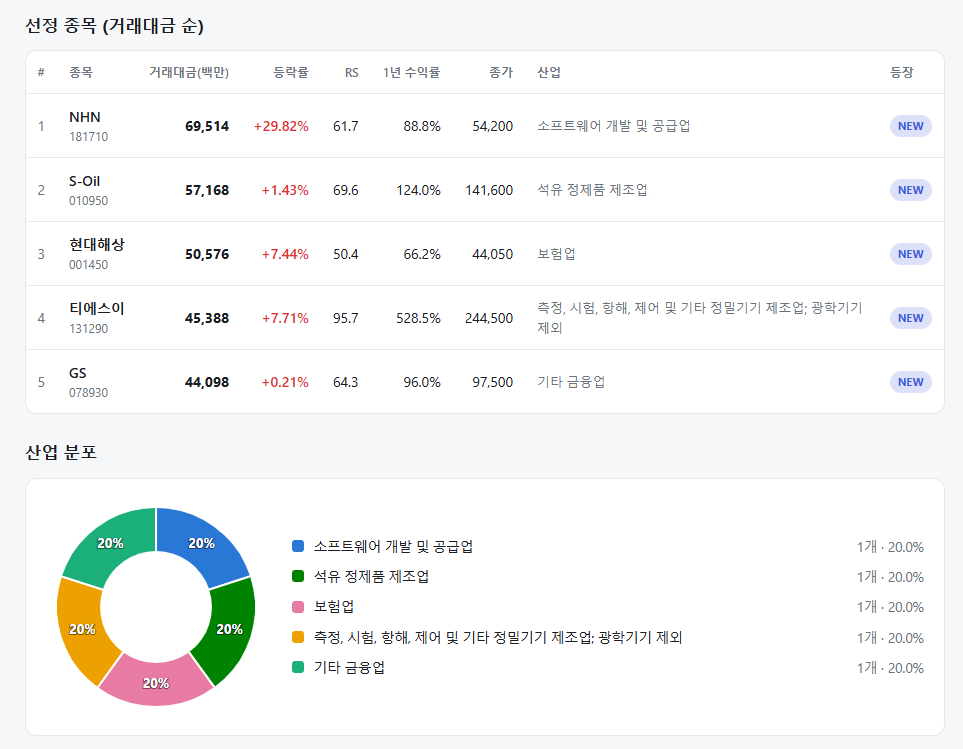
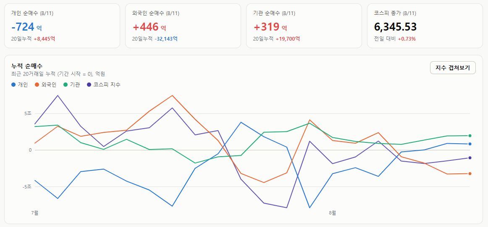
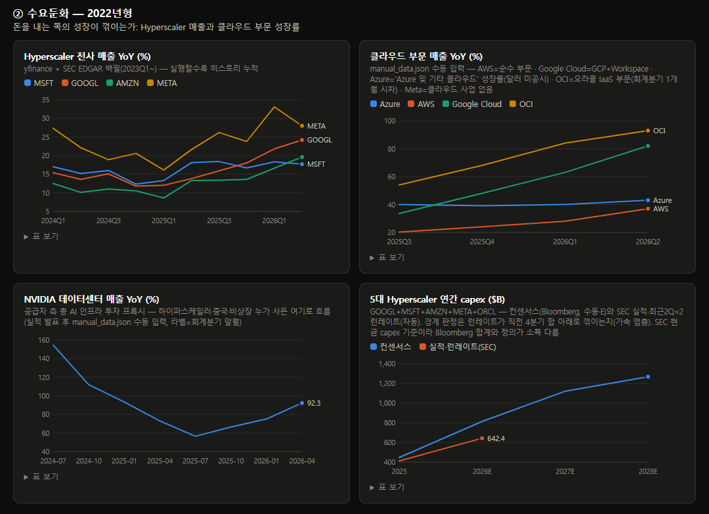

매일의 주도주 정리를 위해 기록합니다.
연속적으로 나온 종목들 또는 상승 후 조정받는 종목 위주로 리서치 해보시면 좋을 것 같습니다.

*오늘의 퀀트픽으로는 '현대해상' 입니다.
▶ 보험손익 대폭 개선과 수익성·자본안정성의 지속
▶ 2분기 순이익을 2,817억원(+13.7% y-y)으로 예상
#주도섹터
게임·소프트웨어 및 인터넷 (테마 랠리 및 팩터 포착)
주요 종목: 위메이드맥스(+29.88% 상한가), NHN(+29.82% 상한가), 위메이드(+13.07%), 마녀공장(+10.10%), 실리콘투(+4.30%).
분석: 게임 테마가 +4.59%, 인터넷과카탈로그 업종이 +3.92% 상승했습니다. 위메이드맥스와 NHN이 상한가를 기록하며 게임·소프트웨어 밸류체인의 강세를 이끌었습니다. NHN(+29.82%, 거래대금 695억 원, RS 61.7)이 강력한 모멘텀으로 시스템에 신규 진입했습니다.
반도체·정밀장비 및 중소형 건설
주요 종목: 금호건설(+29.98% 상한가), 남화토건(+29.98% 상한가), 비에이치(+16.25%), 시노펙스(+12.18%), 티에스이(+7.71%), 에스피지(+5.96%), 삼성전자(+3.91%), SK하이닉스(+0.28%).
분석: 건설 중소형 테마가 +5.08% 상승하며 금호건설과 남화토건이 상한가를 달성했습니다. 반도체 메가 캡에서는 삼성전자가 +3.91% 상승하며 지수 반등을 견인했습니다. 정밀기기/반도체 검사장비 팩터에서는 티에스이(+7.71%, 거래대금 453억 원, RS 95.7, 1년 수익률 528.5%)가 높은 상대강도를 기반으로 시스템에 신규 포착되었습니다.
경기방어·가치주 (석유정제, 보험, 기타금융)
주요 종목: 현대해상(+7.44%), 지역난방공사(+4.31%), S-Oil(+1.43%), GS(+0.21%).
분석: 복합유틸리티 업종(+4.31%)의 지역난방공사가 상승세를 보였습니다. 가치주 및 금융 팩터에서는 현대해상(+7.44%, RS 50.4), S-Oil(+1.43%, RS 69.6), GS(+0.21%, RS 64.3)가 안정적인 수급 하단을 형성하며 시스템 스크리닝 바스켓에 동시 포착되었습니다.
#수급동향

코스피 지수는 +0.73% 상승한 6,345.53으로 마감했습니다. 대형주 중심의 코스피 200 지수 역시 +0.98% 상승한 987.40을 기록했습니다. 코스닥 지수는 +0.39% 상승한 857.84로 장을 마치며 850선 위에 안착했습니다.
유가증권시장에서 외국인 투자자가 446억 원, 기관 투자자가 319억 원을 동반 순매수하며 수급 하단을 방어했습니다. 반면 개인 투자자는 724억 원을 순매도했습니다.
AI 사이클은 어떻게 끝나는가_2편 — 수요둔화(2022년형)

1편에서 공급과잉(1999년형) 신호가 아직 0개임을 확인했습니다. 이번엔 두 번째 경로로 인프라는 멀쩡한데 돈을 내는 쪽의 성장이 꺾이는 시나리오입니다.
2022년, 클라우드는 어떻게 꺾였나
2022년 연준 긴축이 시작되자 기업들은 IT 예산부터 조였습니다. 실적 콜마다 '최적화(쓰던 클라우드를 줄인다는 의미)'라는 단어가 등장했고 성장률이 분기마다 미끄러졌습니다. AWS는 +40%(2021년 말)에서 +12%(2023년 중반)까지 단 6개 분기 만에 떨어졌고, Azure도 50%대에서 20%대로 내려앉았습니다. 엔비디아조차 2022년 하반기 매출이 역성장했고, 데이터센터 부문 성장률은 +80%대에서 +11%까지 미끄러졌습니다. 빅테크는 capex 가이던스를 깎고 대규모 감원에 들어갔습니다.
수요둔화는 폭락이 아니라 '성장률의 연속 둔화'로 먼저 나타납니다. 분기마다 조금씩, 그러나 멈추지 않고. 그래서 저는 네 개의 계기판으로 이 경로를 추적합니다.
계기판 ① 하이퍼스케일러 전사 매출 YoY
돈을 내는 쪽의 본체입니다. 최근 분기 MSFT +17.7%, GOOGL +24.2%, AMZN +19.6%, META +28.0% — 4사 평균 +22.4%. 2024년 이후 10개 분기 추이를 보면 둔화가 아니라 완만한 가속입니다. 경계 기준(2분기 연속 평균 둔화)에 대해 현재 둔화는 1개 분기뿐입니다.
계기판 ② 클라우드 부문 매출 YoY
전사 매출보다 민감한 심장부입니다. Azure +43%, AWS +37%(18분기 만의 최고), Google Cloud +82%, OCI +93% — 네 곳 전부 가속 중이고, 최저치(AWS +37%)도 경계선(20%)의 두 배 위에 있습니다. 2022년에 '최적화'가 시작될 때와 정확히 반대 방향입니다.
다만 조심해서 볼 부분이 있습니다. 현금으로 크는 쪽(AWS·Azure)보다 부채로 크는 쪽(OCI +93%)이 훨씬 빠릅니다. 성장의 무게중심이 레버리지에 실려 있다는 뜻이고, 이건 3편의 주제와 연결됩니다.
계기판 ③ NVIDIA 데이터센터 매출 — 공급자 측 총량
하이퍼스케일러 4사가 놓치는 수요 — 중국, 비상장 AI 랩, 네오클라우드 — 까지 누가 사든 결국 NVIDIA 매출로 흐릅니다. 이 총량 지표는 2025년 중반 +56%로 바닥을 찍고 +66% → +75% → +92%로 3개 분기 연속 재가속 중입니다(분기 $75.2B). 총수요가 식고 있다면 나올 수 없는 숫자입니다.
계기판 ④ 5사 연간 capex — 기대 vs 실행
수요의 미래형입니다. 컨센서스는 2026년 $8,130억 → 2028년 $1조 2,670억. 관건은 기대가 아니라 실행인데, SEC 공시로 집계한 실제 집행 런레이트는 연 $6,420억으로 직전 4개 분기 대비 +16% — 여전히 가속 중입니다.
성장률 가속, 클라우드 재가속, 공급자 총량 +92%, capex 실행 가속. 수요 축 경계 신호는 전부 '정상'이며, 지금은 2022년의 거울상 — 재가속 국면입니다.
그러나 2022년이 가르쳐준 건 반전의 속도입니다. AWS +40% → +12%는 6개 분기면 충분했습니다. 게다가 이번 사이클엔 그때 없던 특수 리스크가 있습니다. 수요의 상당 부분이 소수 AI 랩(OpenAI·Anthropic 등)의 초대형 커밋인데, 이들의 지불 능력은 자체 이익이 아니라 조달(투자 유치·부채)에서 나옵니다. 그리고 기업 고객의 AI 지출은 결국 ROI 검증대에 오릅니다 — 에이전트가 실제 성과를 못 내면 2022년식 '최적화'가 재연됩니다.
제가 보는 전환 신호는 넷입니다.
4사 평균 매출 YoY가 2분기 연속 둔화
클라우드 부문 최저 YoY가 20% 아래로
NVIDIA DC 매출 YoY 20% 미만
capex 실행 런레이트가 직전 4분기 합 아래로
그리고 정량 지표는 아니지만, 실적 콜에 '최적화'라는 단어가 돌아오는 순간을 놓치지 말아야 합니다.
3편은 마지막 경로이자 이번 사이클의 진짜 뇌관 — 레버리지(2008년형)입니다. 오라클 CDS가 사상 최고를 찍은 이유, 그리고 빅테크 부채 이야기입니다.
본문의 모든 지표는 매주 자동 갱신되는 AI 사이클 대시보드에서 직접 확인하실 수 있습니다
(https://pdhman.github.io/report-summary/aicycle.html)
시장 핵심 지표 요약 및 정보를 매일 전달드리고 있습니다. (https://t.me/daily_alphanote)
텔레그램 채널은 개인 기록과 정보 전달을 목적으로 하고 있습니다. 관심있으신분은 링크만 열면 됩니다.